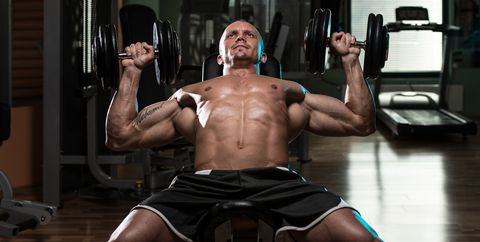
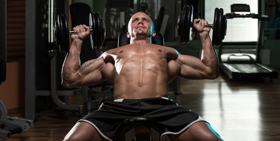

Fitness is een sportactiviteit gericht op onder andere het verbeteren van de conditie, vetverbranding en krachttraining, waarbij het eigen lichaam als weerstand kan dienen. Vaak wordt met fitness de sportactiviteit bedoeld die bedreven wordt met behulp van zogenaamde fitnessapparaten of sporttoestellen. Dit kan onder andere in een sportschool of fitnesscentrum, maar ook thuis of in de buitenlucht. Ik doe 4 keer Krachttraining en 2 keer Cardio per week.Mijn favorieten zijn rugtraining en borsttraining en ik leer meestal zelf wat oefeningen op youtube
 
